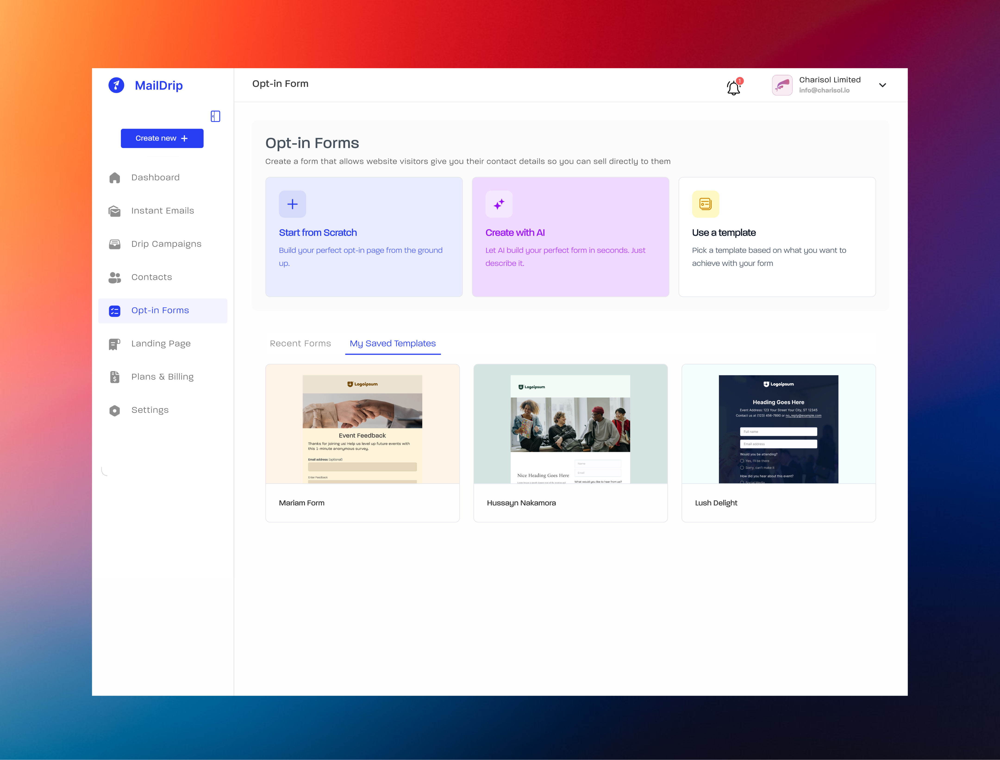

MailDrip
Turning a confusing page-building workflow into a clearer way to create and publish lead-capture forms.


A form hidden inside a page builder
MailDrip’s Opt-In Pages feature was meant to help users collect leads and grow an audience. But the experience asked them to think like page builders before they could create a simple way for someone to sign up.
The existing workflow combined unfamiliar marketing language, several setup decisions and a blank starting point. Important actions competed for attention, while dense layouts made the choices harder to scan. Users were leaving the creation flow before publishing a form.
My task was to address both sides of that problem: simplify the journey and make the interface communicate the next step more clearly.


Start with the outcome people want
User feedback and the workflow review pointed to a useful distinction. People were trying to grow an audience, collect leads, take registrations or promote an event. Building a page was a means to that end.
I reframed “Opt-In Pages” as “Opt-In Forms” to make the feature easier to recognise. The journey then centres on what the form should achieve, rather than asking people to interpret a page-building model first.
The starting question became: what would you like this form to achieve?
That change guides the interface as well as the language. The entry screen makes three routes clear: start from scratch, create with AI, or use a template.

Help people get past the blank page
Starting from nothing asks users to make too many decisions before they see value. The AI-assisted route lets them describe their objective in ordinary language and receive a suggested form structure, fields and layout.
Templates offer another starting point. I reorganised them around common goals and paired them with previews and short descriptions, so choosing one becomes a decision about relevance rather than guesswork.
The scratch route remains available. The aim is to support different levels of confidence while giving each route a clear beginning.


Let the interface do more of the explaining
Renaming the feature would not be enough if the screen still felt difficult to use. I rebuilt the visual hierarchy so primary actions stand apart from supporting information, related choices sit together, and spacing gives each group room to be understood.
The template experience follows the same approach. Previews help users recognise what they are choosing, while clearer grouping reduces how much they need to read before taking a step.
The goal was a cleaner interface that makes the workflow feel as approachable as the task itself: create a form, publish it, and start collecting responses.

What changed after the redesign
The project’s reported post-launch figures show improvements in adoption, workflow completion and form conversion.
- Feature adoption
- 14% → 42%3× the previous rate
- Workflow completion
- 38% → 79%41 percentage points higher
- Form conversion
- 2.4% → 4.8%2× the previous rate
Together, these measures describe a stronger path from discovering the feature to publishing a form and capturing a response.
Clarity starts before the first click
This redesign reinforced how much the framing of a feature matters. If people do not recognise the task in front of them, improving the screen alone will only go so far.
Changing the language, offering useful starting points and giving the interface a clearer hierarchy worked towards the same purpose: helping users reach their first usable form with fewer decisions along the way.
The lesson I carry forward is to design the explanation and the workflow together. A product becomes easier to use when the words, the choices and the screen all describe the same task.
Have a project in mind?
Let’s talk about what you’re building and how I can help.
Kobo Kounta